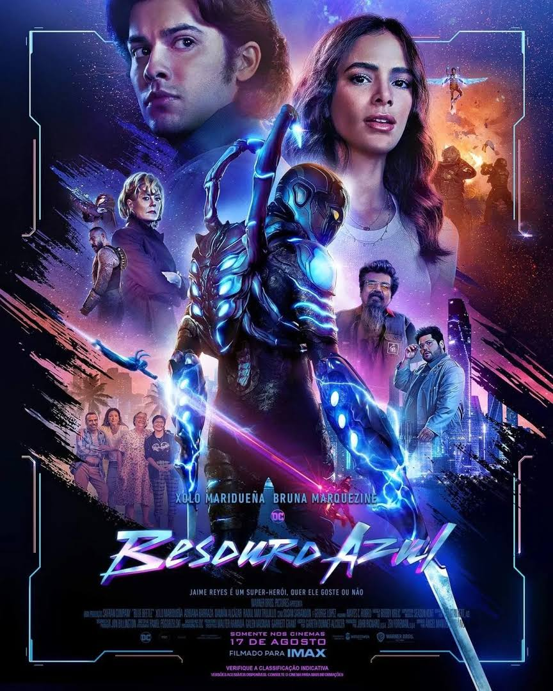

Diretor(a): Angel Manuel Soto.
Duração: 2h08min.
Elenco: Xolo Maridueña, Bruna Marquezine, Susan Sarandon.
Sinopse: Baseado nos quadrinhos da DC, o jovem mexicano Jaime Reyes que, recém-formado, volta para casa cheio de aspirações para o futuro. Em meio a uma busca por seu propósito no mundo - e um emprego - o destino o surpreende ao colocar em seu caminho uma antiga relíquia de biotecnologia alienígena, conhecida como Escaravelho. O besouro alienígena azul escolhe Jaime para ser seu hospedeiro simbiótico - o que lhe dá poderes.
Classificação: 12.